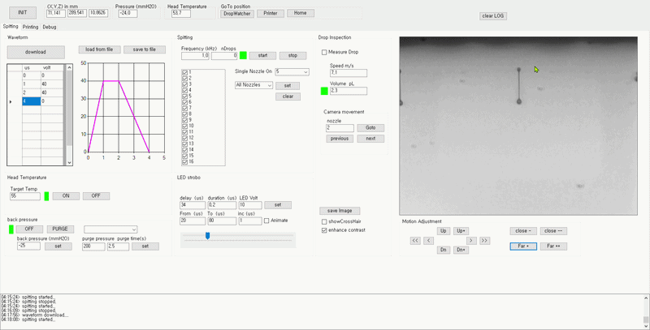
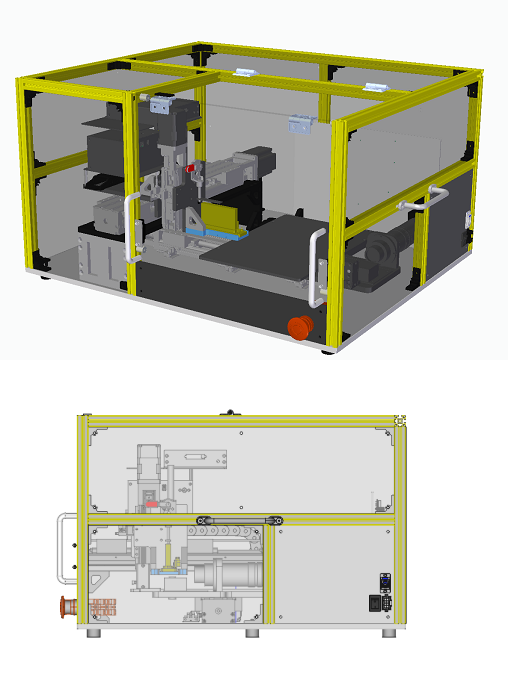

DropWatcher
The DropWatcher monitors ink drop formation and provides real-time feedback for optimal print quality in industrial inkjet applications.

Test Printer
The Test Printer allows for comprehensive testing and evaluation of industrial inkjet systems under various conditions.
